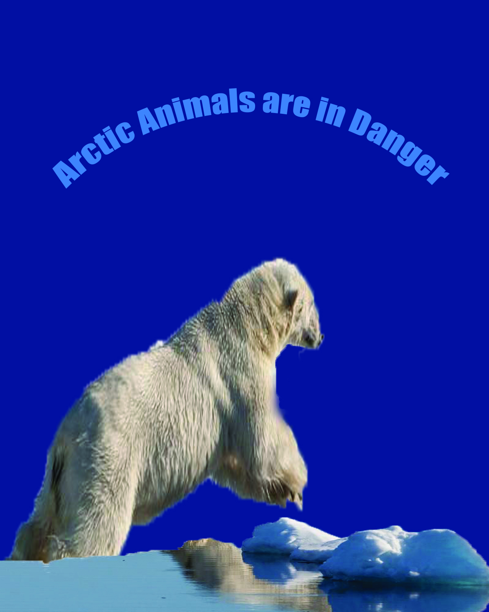

Arctic Likely to Become Ice-Free

Over the past decades of global warming, the oldest and thickest ice in the Arctic has decreased by 95 percent, accoreding to the National Oceanic and Atomspheric Administration's annual Arctic Report Card by Chris Mooney.